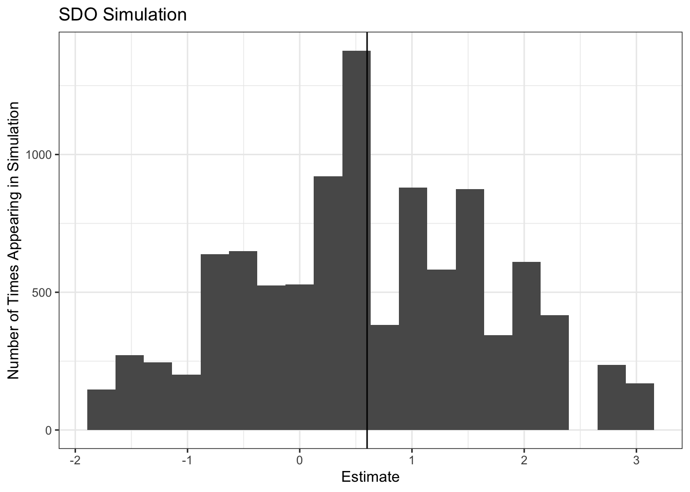

4 Potential Outcomes
4.1 Yule Regression
# Yule dataset goes here
yule <- read_dta("https://storage.googleapis.com/causal-inference-mixtape.appspot.com/yule.dta")
# Yule's regression
lm_robust(paup~outrelief + old + pop, data = yule, se_type = "stata")## Estimate Std. Error t value Pr(>|t|) CI Lower
## (Intercept) 63.1877372 42.71255368 1.4793716 0.1502048458 -24.3049628
## outrelief 0.7520945 0.16798829 4.4770650 0.0001156568 0.4079861
## old 0.0556020 0.36803485 0.1510781 0.8809973217 -0.6982832
## pop -0.3107383 0.07440422 -4.1763536 0.0002614333 -0.4631485
## CI Upper DF
## (Intercept) 150.6804372 28
## outrelief 1.0962029 28
## old 0.8094872 28
## pop -0.1583282 284.2 Monte Carlo Simulation of the SDO
set.seed(1)
# Monte Carlo Simulation
sdo <- function(N) {
# Generate potential outcomes
# By construction of these potential outcomes
# The true ATE is 0.6
y1 <- c(7, 5, 5, 7, 4, 10, 1, 5, 3, 9)
y0 <- c(1, 6, 1, 8, 2, 1, 10, 6, 7, 8)
# Generate treatment vector
d <- sample(c(rep(1, N/2), rep(0, N/2)), N, replace = F)
# Generate observed y
y <- d * y1 + (1 - d) * y0
# Get the SDO of this assignment
sdo <- mean(y[d == 1]) - mean(y[d == 0])
return(sdo)
}
# Preallocate memory to our list to speed computation
mc_result <- c(NA_real_)
length(mc_result) <- 10000
# Simulation 10000 draws
for(i in 1:10000){
mc_result[i] <- sdo(10)
}
# This returns our best guess of the result via simulation
mean(mc_result)## [1] 0.59288ggplot(data = data.frame(x = mc_result), aes(x=x))+
geom_histogram(bins = 20)+
# The true ATE
geom_vline(xintercept = 0.6)+
xlab("Estimate")+
ylab("Number of Times Appearing in Simulation")+
ggtitle("SDO Simulation")
4.3 Krueger Replication
# Krueger's Star Dataset
star_sw <- read_dta("https://storage.googleapis.com/causal-inference-mixtape.appspot.com/star_sw.dta")
# Regression 1
lm_robust(tscorek ~ sck + rak, data = star_sw, se_type = "stata")## Estimate Std. Error t value Pr(>|t|) CI Lower
## (Intercept) 918.0428928 1.633391 562.0472691 0.000000e+00 914.840835
## sck 13.8989945 2.454093 5.6635966 1.553732e-08 9.088053
## rak 0.3139354 2.270976 0.1382381 8.900570e-01 -4.138027
## CI Upper DF
## (Intercept) 921.244950 5783
## sck 18.709936 5783
## rak 4.765898 5783